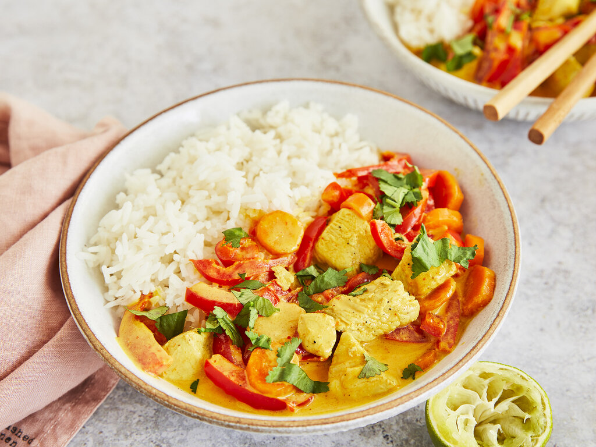

Hühnchen-Curry mit Koriander

Ein köstliches Currygericht mit zartem Hühnchen und frischem Koriander.
Zutaten:
- 500g Hühnchenbrust, in Würfel geschnitten
- 2 Zwiebeln, gehackt
- 3 Knoblauchzehen, gehackt
- 1 Dose Kokosmilch
- 2 EL Currypulver
- 1 TL Kurkuma
- 1 TL Kreuzkümmel
- 1 TL Korianderpulver
- 1 TL Ingwerpulver
- Salz & Pfeffer nach Geschmack
- Frischer Koriander zum Garnieren
Zubereitung:
- In einer Pfanne oder einem Topf etwas Öl erhitzen und die gehackten Zwiebeln und Knoblauchzehen darin glasig anbraten.
- Die Hühnchenwürfel hinzufügen und anbraten, bis sie goldbraun sind.
- Currypulver, Kurkuma, Kreuzkümmel, Korianderpulver und Ingwerpulver hinzufügen und gut vermischen, bis das Hühnchen gleichmäßig gewürzt ist.
- Die Kokosmilch hinzugießen und alles gut umrühren. Gegebenenfalls mit Salz und Pfeffer abschmecken.
- Das Curry zugedeckt bei mittlerer Hitze etwa 15-20 Minuten köcheln lassen, bis das Hühnchen gar ist und die Sauce etwas eingedickt ist.
- Mit frischem Koriander garnieren und heiß servieren, idealerweise mit Reis oder Naan-Brot.